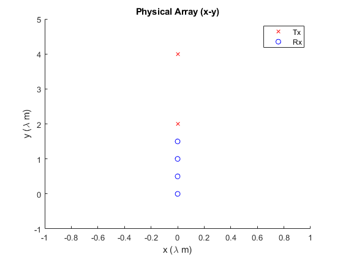
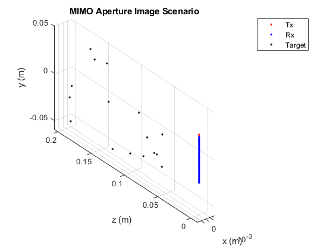
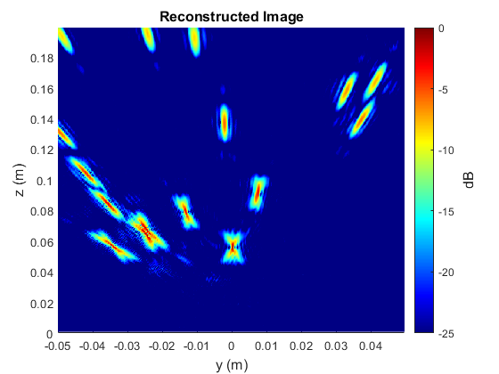
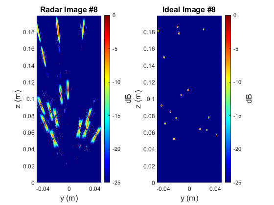

Contents
- Include Necessary Directories
- Create the Objects
- Set FMCW Parameters
- Set Antenna Array Properties
- Set SAR Scenario Parameters
- Set Target Parameters
- Compute Beat Signal
- Set Image Reconstruction Parameters and Create sarImage Object
- Reconstruct the Image
- Compute the Ideal Image from the YZ Imaging Scene and Display
- Setup Dataset Scenario
- Loop through Image Generation
- Compare Samples Side by Side
% Copyright (C) 2021 Josiah W. Smith % % This program is free software: you can redistribute it and/or modify % it under the terms of the GNU General Public License as published by % the Free Software Foundation, either version 3 of the License, or % (at your option) any later version. % % This program is distributed in the hope that it will be useful, % but WITHOUT ANY WARRANTY; without even the implied warranty of % MERCHANTABILITY or FITNESS FOR A PARTICULAR PURPOSE. See the % GNU General Public License for more details.
Include Necessary Directories
addpath(genpath("../"))
Create the Objects
fmcw = fmcwChirpParameters(); ant = sarAntennaArray(fmcw); sar = sarScenario(ant); target = sarTarget(fmcw,ant,sar); im = sarImage(fmcw,ant,sar,target);
Set FMCW Parameters
When the parameters of an fmcwChirpParameters object are changed by the user, the object automatically updates itself, namely the property 'k' and other dependencies of the changed parameters.
fmcw.ADCSamples = 50; fmcw.f0 = 300*1e9; fmcw.RampEndTime_s = 50.1*1e-6; fmcw.fS = 1000*1e3; fmcw.K = 200*1e12; fmcw.IdleTime_s = 0*1e-6; fmcw.TXStartTime_s = 0*1e-6; fmcw.ADCStartTime_s = 0*1e-6; fmcw.fC = 305*1e9;
Set Antenna Array Properties
When the parameters of an antennaArray object are changed by the user, the object automatically updates itself
ant.isEPC = false; ant.z0_m = 0; % Small MIMO Array ant.tableTx = [ 0 0 2 0 1 0 0 4 0 1]; ant.tableRx = [ 0 0 0 0 1 0 0 0.5 0 1 0 0 1 0 1 0 0 1.5 0 1]; % Display the Antenna Array ant.displayAntennaArray();
Set SAR Scenario Parameters
When the parameters of a sarScenario object are changed by the user, the object automatically updates itself
sar.scanMethod = 'Linear'; sar.yStep_m = fmcw.lambda_m*2; sar.numY = 25; % Display the SAR Scenario sar.displaySarScenario();

Set Target Parameters
When the parameters of a sarTarget object are changed by the user, the object automatically updates itself
target.isAmplitudeFactor = false; target.rp.numTargets = 16; target.rp.xMin_m = 0; target.rp.xMax_m = 0; target.rp.yMin_m = -0.05; target.rp.yMax_m = 0.05; target.rp.zMin_m = 0.05; target.rp.zMax_m = 0.2; target.rp.ampMin = 0.5; target.rp.ampMax = 1; % Which to use target.isTable = false; target.isRandomPoints = true; % Display the target target.displayTarget();
Compute Beat Signal
target.isGPU = true; target.computeTarget();
Set Image Reconstruction Parameters and Create sarImage Object
When the parameters of a sarImage object are changed by the user, the object automatically updates itself
im.nFFTy = 512;
im.nFFTz = 512;
im.yMin_m = -0.05;
im.yMax_m = 0.05;
im.zMin_m = 0;
im.zMax_m = 0.2;
im.numY = 256;
im.numZ = 256;
im.isGPU = true;
im.method = "Uniform 1-D SAR 2-D RMA";
im.isMult2Mono = true;
im.zRef_m = 0.25;
Reconstruct the Image
im.computeImage(); im.displayImage();
Attempting image reconstruction using Uniform 1-D SAR 2-D RMA method. Done reconstructing image using Uniform 1-D SAR 2-D RMA method.
Compute the Ideal Image from the YZ Imaging Scene and Display
imIdeal2D = computeIdeal2D(target,im,"YZ",1e-3,1e-3); figure plotXYdB(imIdeal2D,im.y_m,im.z_m,-25,"y (m)","z (m)","Ideal Image",12)

Setup Dataset Scenario
numSamples = 32;
numRandomPointsMax = 64;
numRandomPointsMin = 4;
radarImages = single(zeros(im.numY,im.numZ,numSamples));
idealImages = single(zeros(im.numY,im.numZ,numSamples));
% Set objects to silent
target.isSilent = true;
im.isSilent = true;
Loop through Image Generation
for indSample = 1:numSamples target.rp.numTargets = randi([numRandomPointsMin,numRandomPointsMax]); target.computeTarget(); im.computeImage(); radarImages(:,:,indSample) = im.imXYZ; idealImages(:,:,indSample) = computeIdeal2D(target,im,"YZ",1e-3,1e-3); disp("Iteration " + indSample + "/" + numSamples + " Done"); end
Iteration 1/32 Done Iteration 2/32 Done Iteration 3/32 Done Iteration 4/32 Done Iteration 5/32 Done Iteration 6/32 Done Iteration 7/32 Done Iteration 8/32 Done Iteration 9/32 Done Iteration 10/32 Done Iteration 11/32 Done Iteration 12/32 Done Iteration 13/32 Done Iteration 14/32 Done Iteration 15/32 Done Iteration 16/32 Done Iteration 17/32 Done Iteration 18/32 Done Iteration 19/32 Done Iteration 20/32 Done Iteration 21/32 Done Iteration 22/32 Done Iteration 23/32 Done Iteration 24/32 Done Iteration 25/32 Done Iteration 26/32 Done Iteration 27/32 Done Iteration 28/32 Done Iteration 29/32 Done Iteration 30/32 Done Iteration 31/32 Done Iteration 32/32 Done
Compare Samples Side by Side
indRand = randi(numSamples); figure subplot(121) plotXYdB(radarImages(:,:,indRand),im.y_m,im.z_m,-25,"y (m)","z (m)","Radar Image #" + indRand,12) subplot(122) plotXYdB(idealImages(:,:,indRand),im.y_m,im.z_m,-25,"y (m)","z (m)","Ideal Image #" + indRand,12)